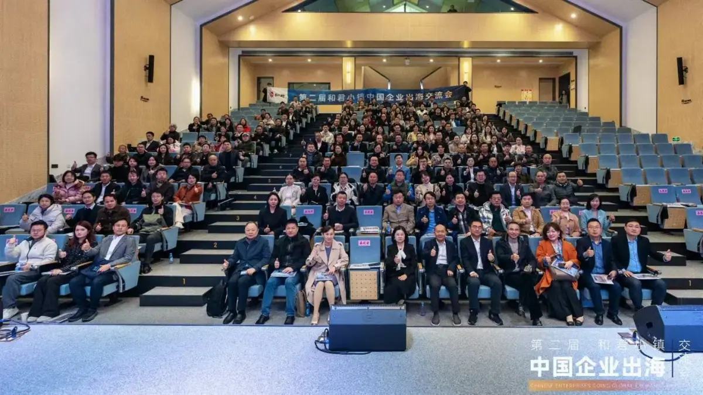
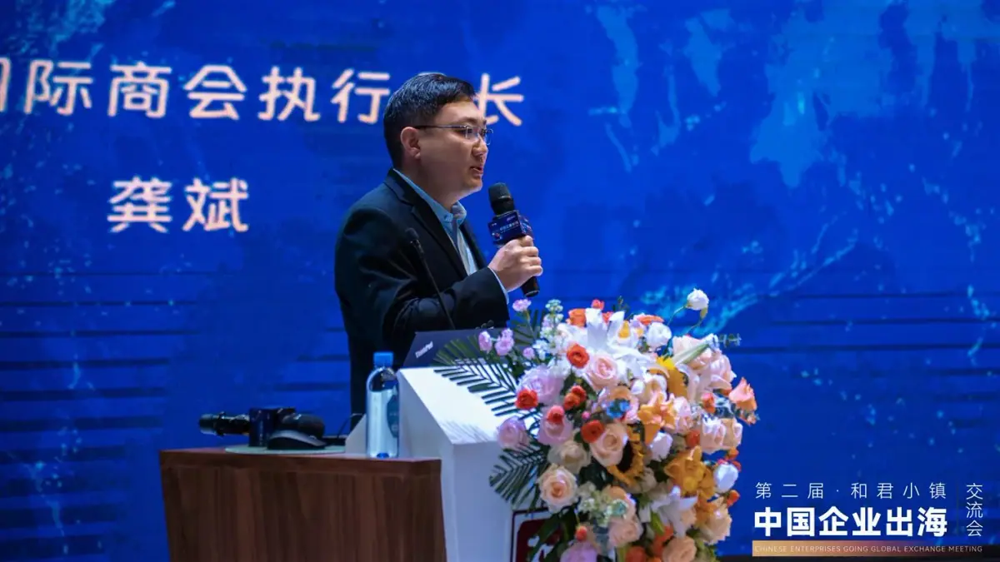

MEDIA-04
第三方报道 · MEDIA COVERAGE
董立鑫聚焦中国企业全球化转型，提出从“草莽出海”迈向专业化全球经营的系统方法
From "reckless expansion" to professional global operation — a systematic approach.
第三方媒体报道：海鑫汇创始人兼CEO董立鑫发起并承办第二届和君小镇·中国企业出海交流会，联合比亚迪、欣旺达、中国汽车工业协会等代表，提出从“草莽出海”迈向专业化全球经营的系统方法。来源：和君集团官网。
报道概述
海鑫汇创始人兼CEO，和君咨询合伙人董立鑫发起并承办第二届和君小镇·中国企业出海交流会。和君集团董事长王明夫、对外经济贸易大学深圳研究院执行院长刘琳、世界贸易中心协会亚太区商贸服务顾问委员会主席朱小兰，以及比亚迪、欣旺达、中国汽车工业协会、杭州科技六小龙·群核科技等企业、行业协会及海外机构代表共同研讨中国企业高质量出海，并以《告别草莽出海时代，咨询如何赋能中国企业出海》为题，分享全球战略布局、本地化运营、风险管控及产融互动等实践洞察。

海鑫汇视角
“草莽出海”靠红利，“专业出海”靠体系。当比亚迪、欣旺达入场，方法论与风控能力成了分水岭。

原文链接
本文为第三方媒体对海鑫汇创始人兼CEO董立鑫的公开报道整理，首发于 和君集团官网。 查看官网原文 →
想把“出海”从口号变成可执行的路径？先做一次免费首诊判断。
预约免费首诊 →